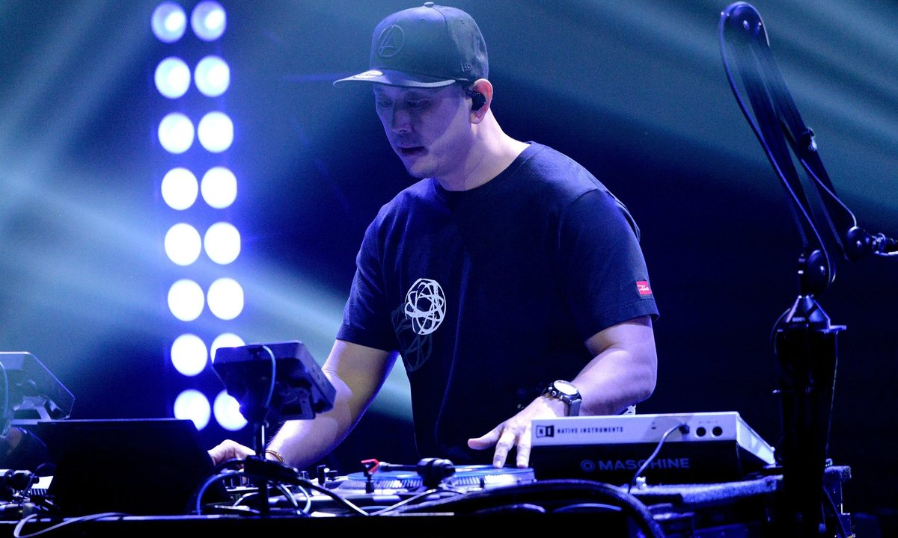
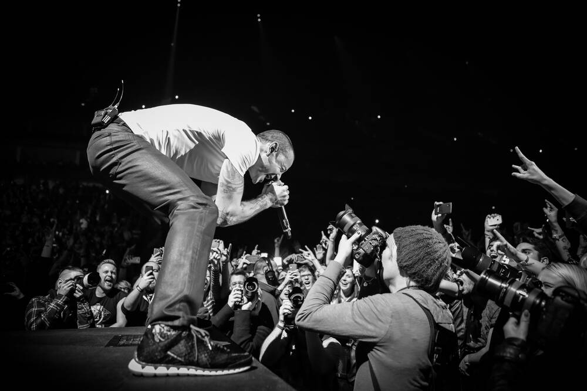
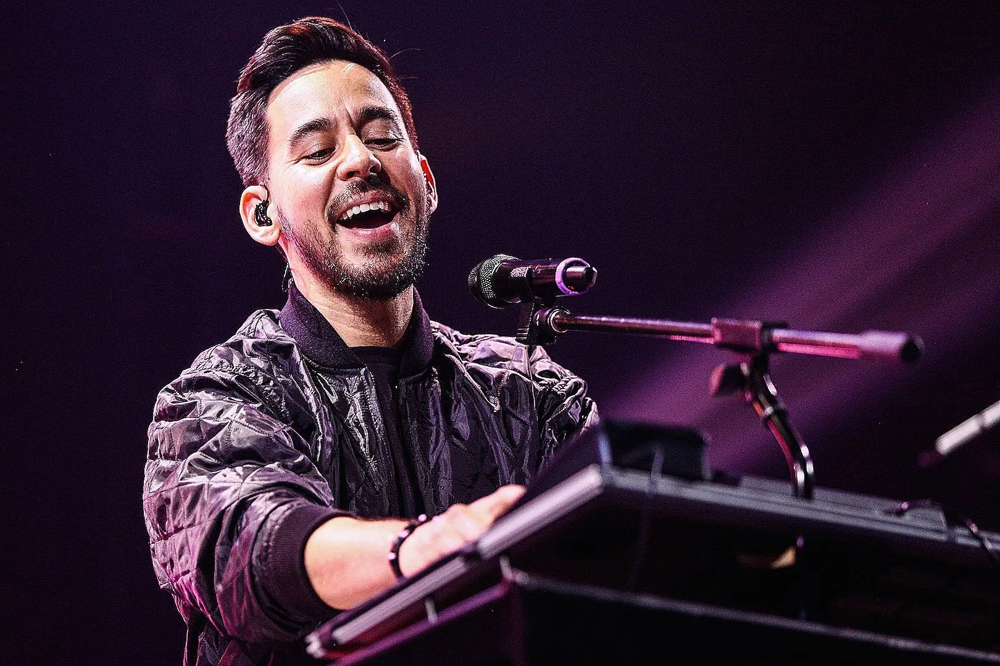
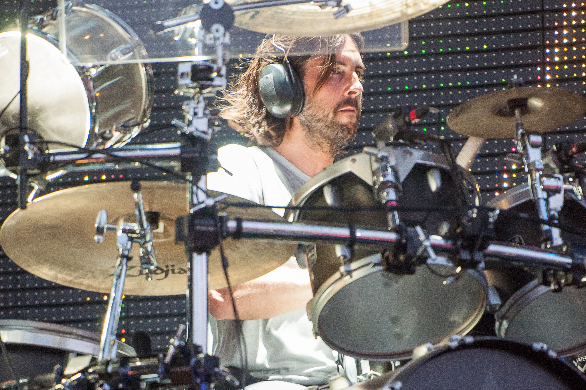
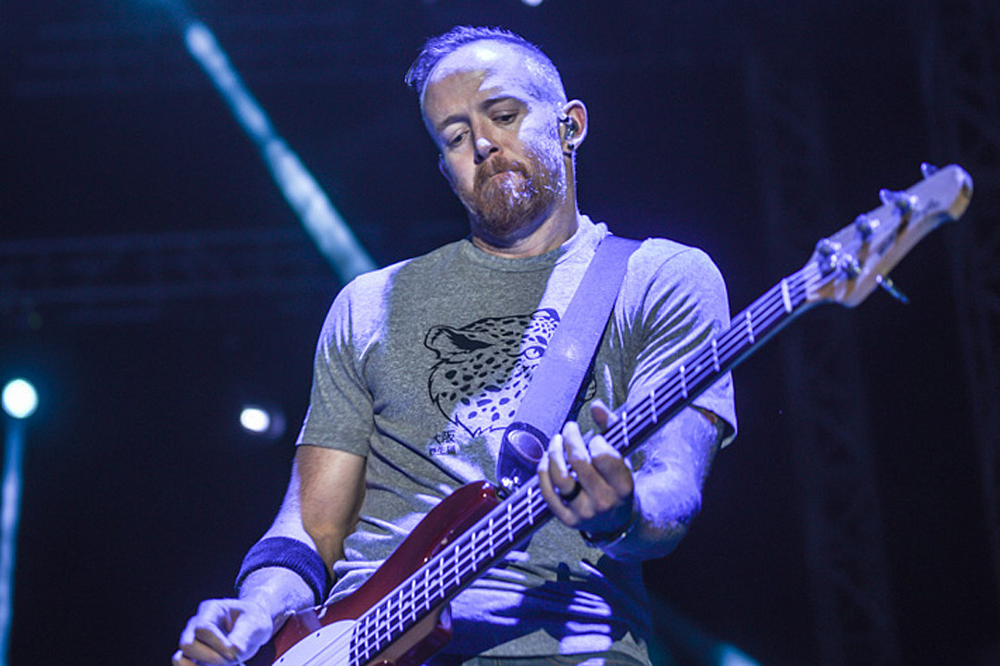
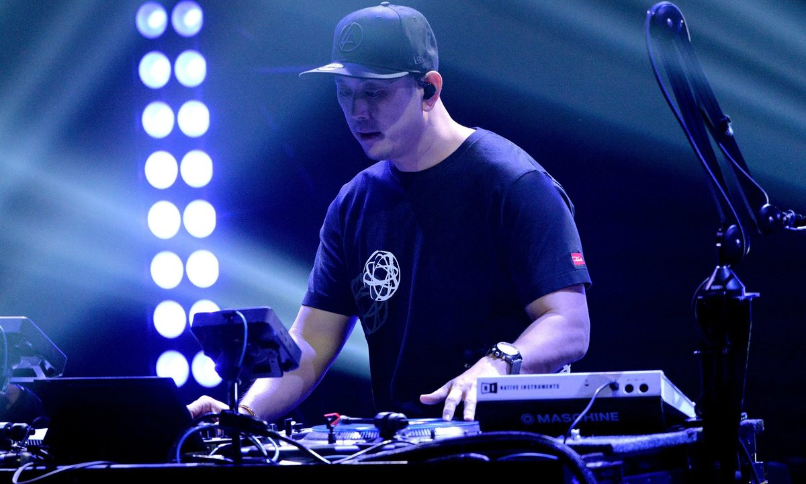
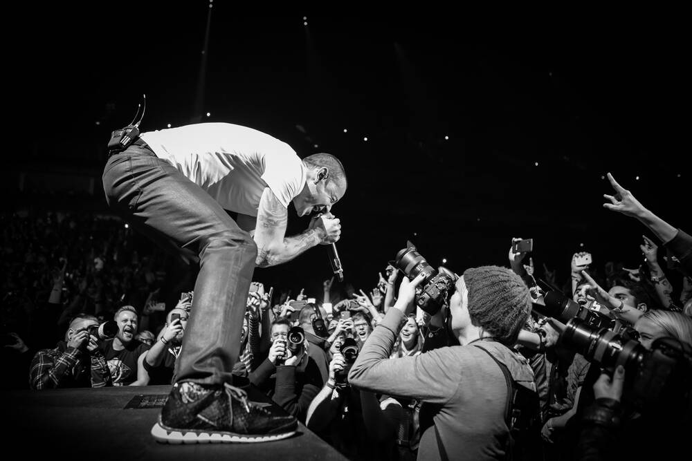
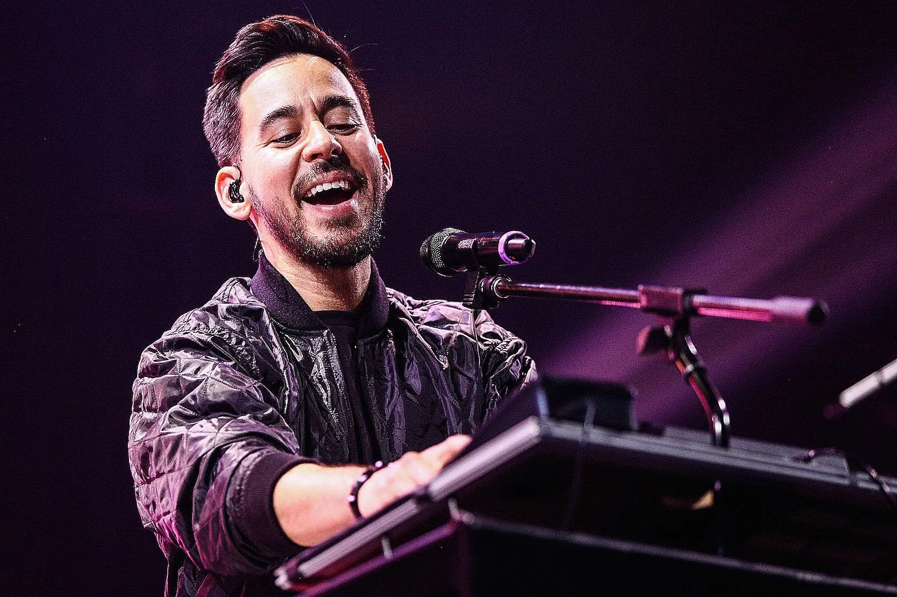
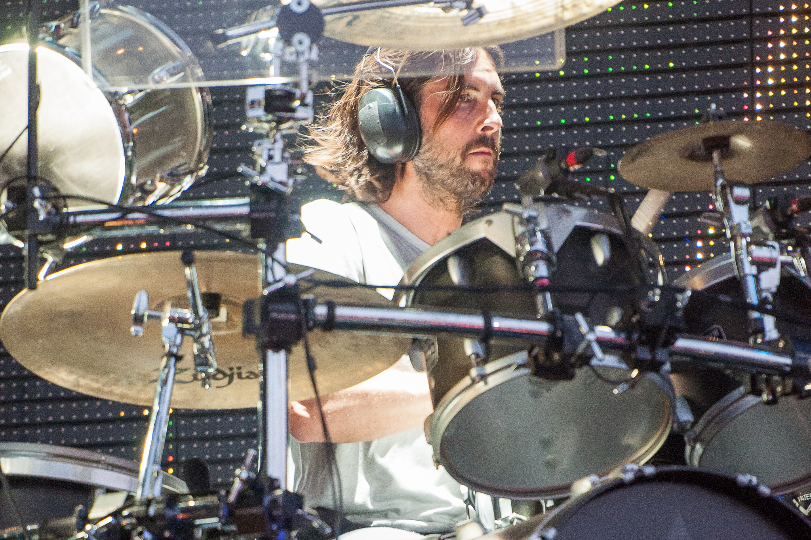
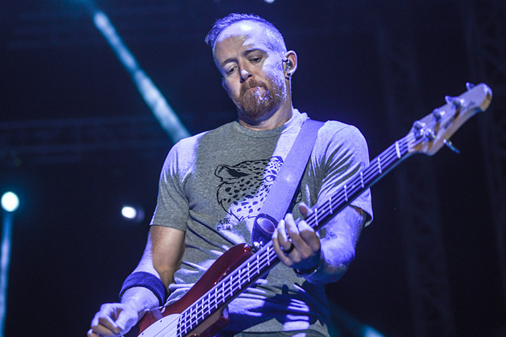

En vivos
Numb
En vivo en el Rock am Ring el 06 de junio de 2004
Breaking The Habit
En vivo en Webster Hall (Grand Ballroom) el 11 de mayo de 2007 presentado por AOL Music
Bleed It Out/A Place For My Head
En vivo en el Rock am Ring el 06 de junio de 2004
In The End
En vivo desde Maximus Festival Argentina el 06 de mayo de 2017
Colaboraciones
Numb/Encore ＋ Yesterday
En vivo desde los Grammys 2006 interpretaron Numb/Encore y colaboraron en la cancion Yesterday junto a Paul Cartney
Bleed it Out
En vivo desde Oracle Arena en Oakland California en diciembre de 2014 interpretaron Bleed it Out junto al cantante de Rise Against Tim McIlrath
A Place For My Head
En vivo durante el Warped Tour Ventura en 2014 interpretaron A Place For My Head junsto al cantante de A Day To Remember Jeremy McKinnon
Crawling
En vivo desde Charlotte NC el 30 de julio de 2008, tocaron Crawling junto con el cantante Chris Cornell
Imagenes
 








